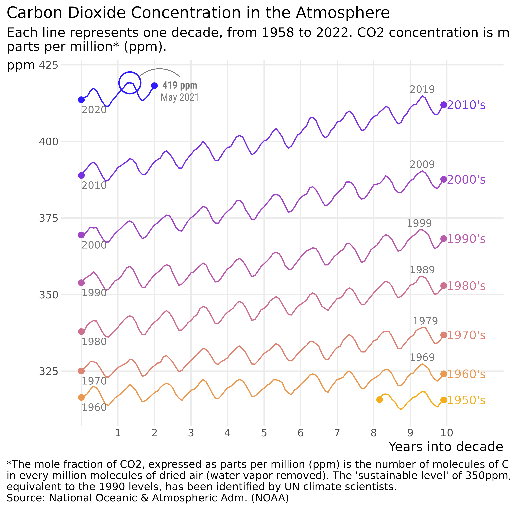
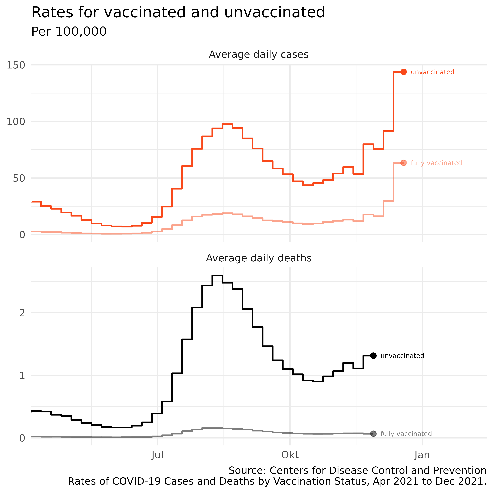
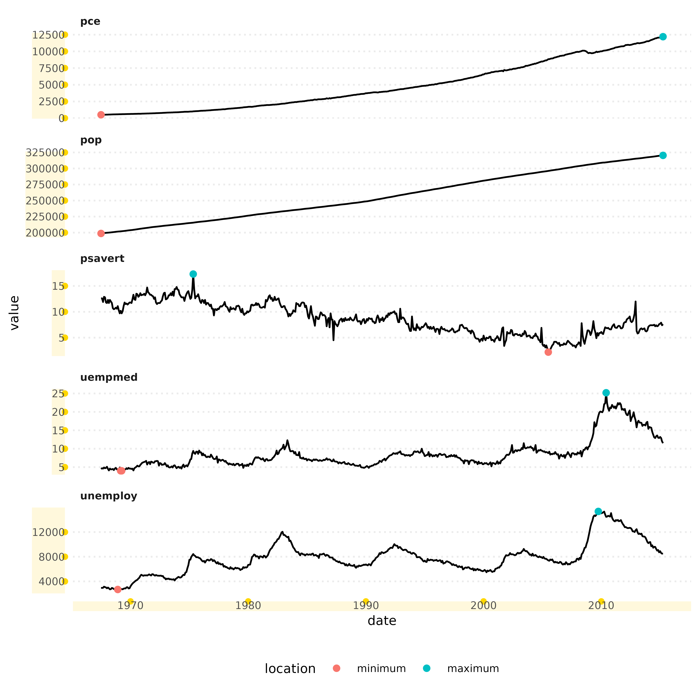

Carbon Dioxide Concentration in the Atmosphere
Inspired by Gregor Aisch’s plot on Carbon dioxide concentration over time, the ggpointless package contains the data set co2_ml – a monthly time series of CO2 measurements taken at Mauna Lao, Hawaii.
data(co2_ml)The data set contain 5 variables, and 766 observations. In order to recreate Gregor Aisch’s plot we first need to add 1 more variables that we’ll call:
-
date_scale, a common x axis for the different lines
To be able plot separate lines for each decade of CO2 measurements on the same scale, we need a common x-range.
To get this, we
- add together 1950 and ‘year into the decade’ :
1950 + (year %% 10) - create a string in the
"yyyy-mm-dd "format :sprintf("%d-%d-01", 1950 + (year %% 10), month)) - and convert to date class using
as.Date()
# helper to format the x-axis labels
axis_labeller <- function(date) {
year <- as.integer(format(date, "%Y"))
tmp <- year - min(year, na.rm = TRUE)
replace(tmp, !tmp, "")
}
p
#> Warning: Removed 28 rows containing non-finite values (stat_pointless).
Rates for vaccinated and unvaccinated
The second data set is taken Centers for Disease Control and Prevention. The two graphs illustrate the relationship between people who are fully vaccinated against COVID-19 and those who are unvaccinated becoming infected with virus and dying from it, inspired by the New York Times’ Coronavirus Map and Cases:

We can use the latter data set to recreate this plot from the New York Times’ Coronavirus Map and Cases:
Facets
Since we make use the magic of ggplot2, geompointless() and stat_pointless() can be used for faceting of course. The following example is taken from this Stackoverflow question
# https://stackoverflow.com/q/29375169/8583393
ggplot(economics_long,
aes(x = date, y = value)) +
geom_line() +
facet_wrap(~variable, ncol = 1, scales = 'free_y') +
geom_pointless(
aes(colour = after_stat(location)),
location = c("minimum", "maximum")
)